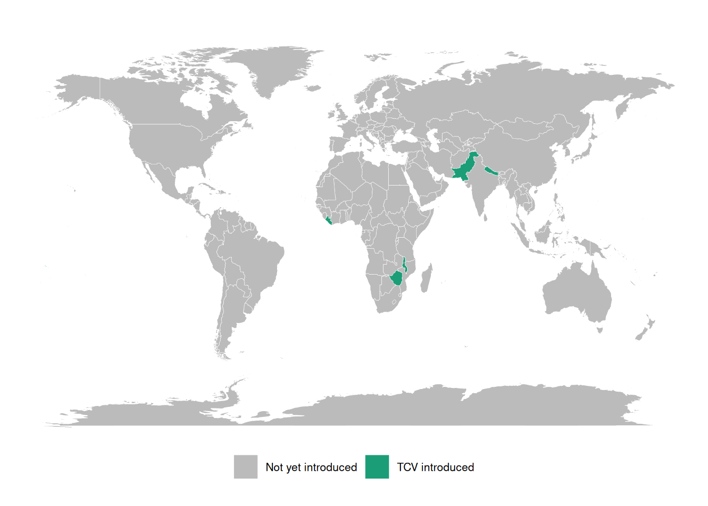
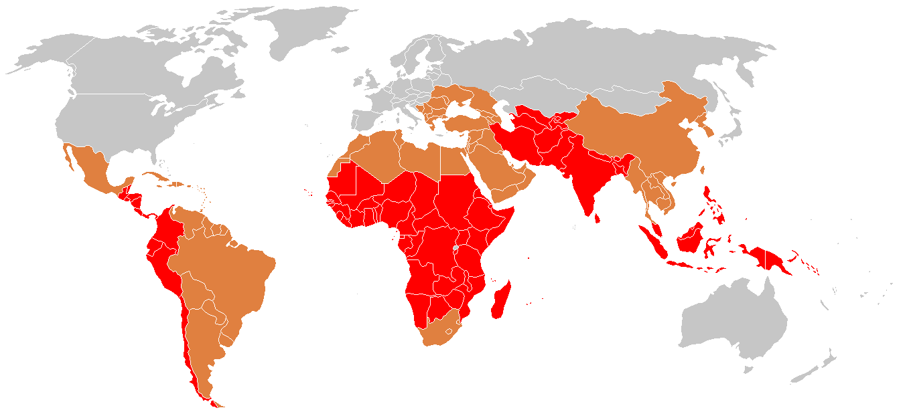
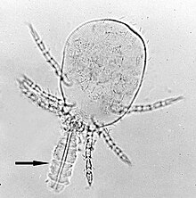
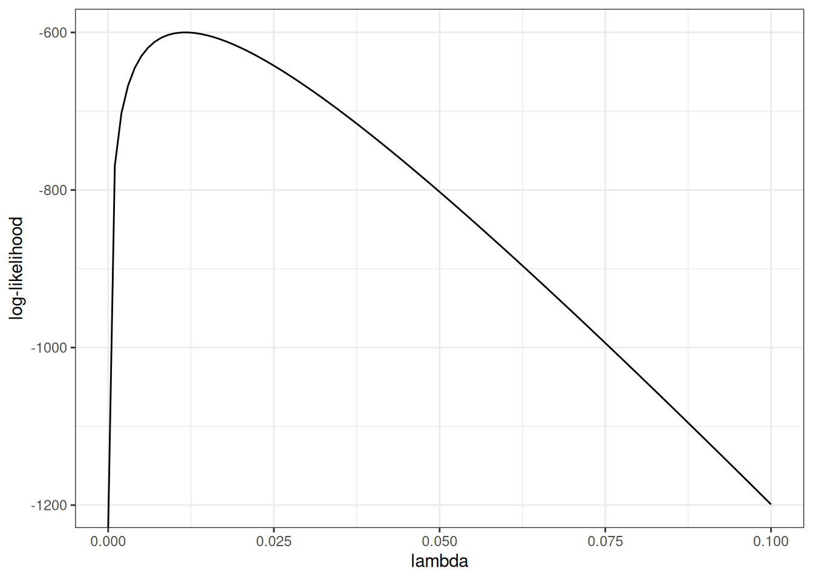
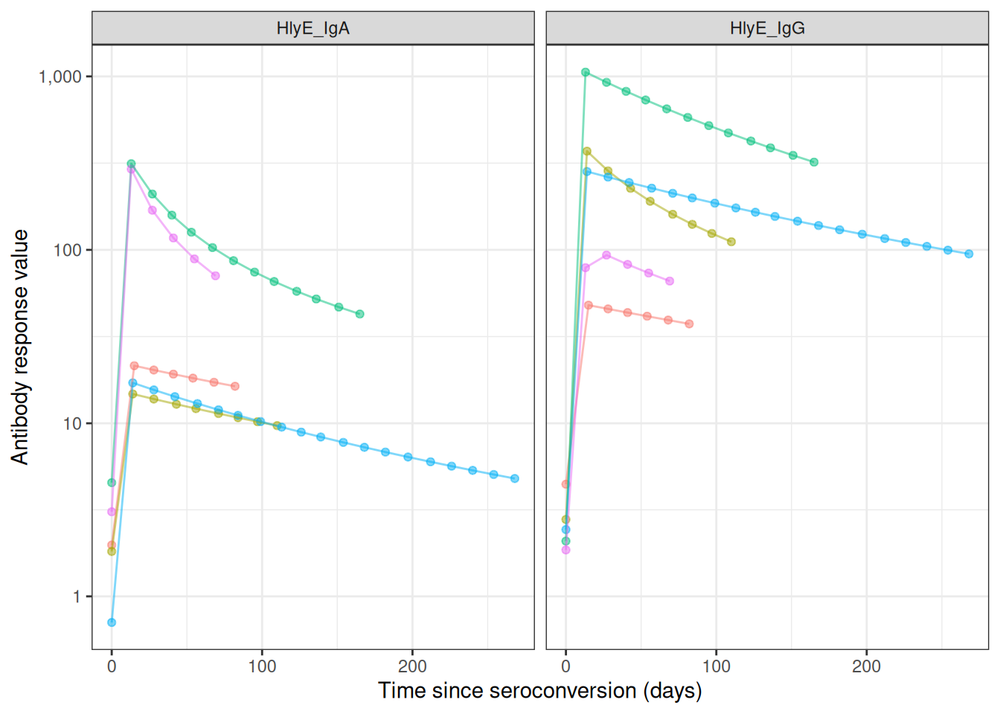
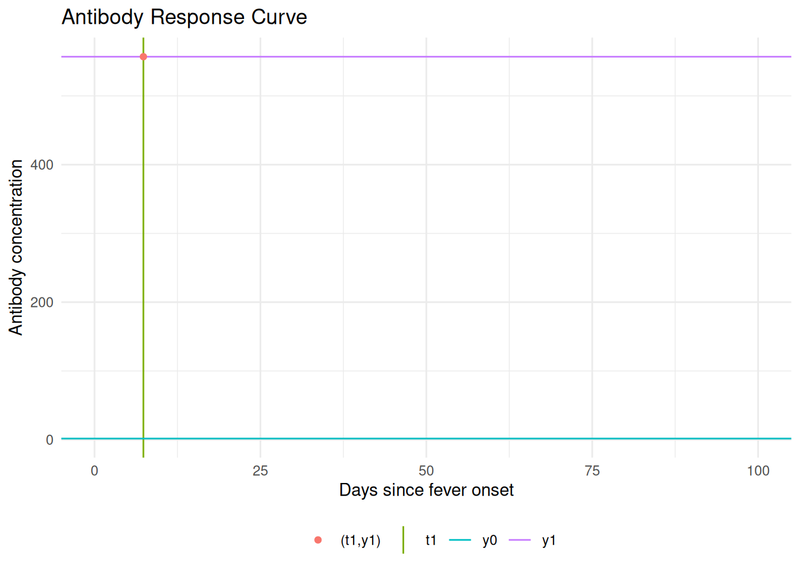
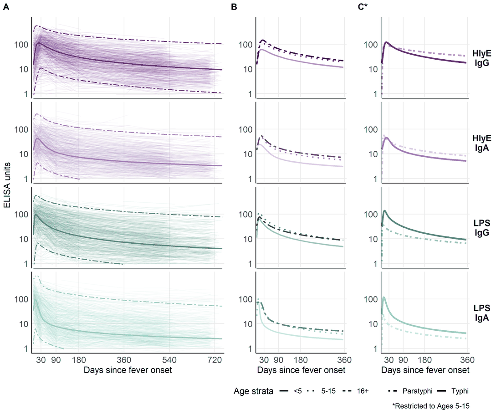
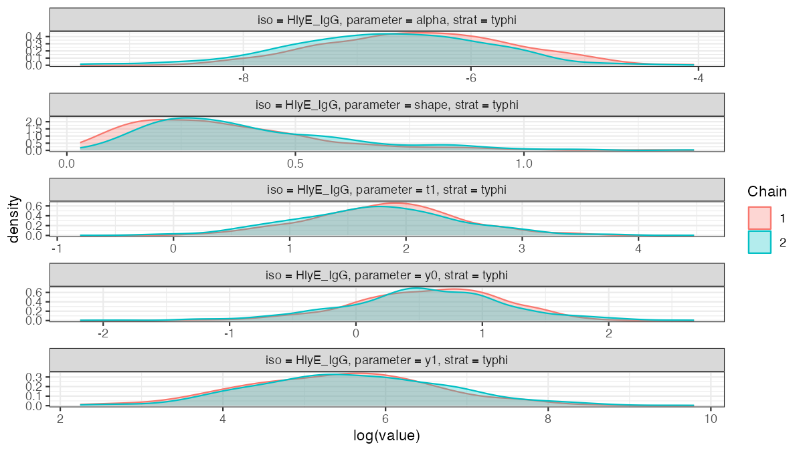

{kind=link}
{kind=link}

Infectious disease epidemiology
Salmonella enterica (“typhoid fever”)
- ~21.7 million symptomatic cases/year
- ~217,000 deaths/year (~1% case fatality with treatment; up to 20% untreated)
- Highest burden: ages 5–19
- Symptoms: sustained high fever, severe headache, abdominal pain, malaise; rose-spot rash (~30% of patients); constipation (early) or diarrhea (later)


Shigella (“dysentery”)
- ~100 million infections annually
- ~100,000 deaths annually (~1% case fatality; higher in malnourished children)
- Most cases and deaths: children under 5 in low- and middle-income countries (LMICs)
- Symptoms: bloody diarrhea (dysentery), abdominal cramps, fever, tenesmus (painful urge to defecate)

Orientia tsutsugamushi (“scrub typhus”)
- ~1,000,000 infections/year
- ~10,000 deaths/year (~1% case fatality with treatment; up to 30% untreated)
- Symptoms: high fever, severe headache, myalgia; eschar (pathognomonic black scab at mite-bite site); macular rash; cough; gastrointestinal symptoms; hemorrhage in severe cases

Why estimate incidence from serosurveys?
The burden-data gap
Typhoid conjugate vaccines (TCVs) are 80-90% effective and WHO-recommended since 2018, but few countries have adopted them into routine immunization.
A major barrier is the lack of burden data: most low- and middle-income countries lack robust typhoid surveillance and have little or no incidence data.
These gaps block applications for vaccine funding, widening equity gaps in access to effective vaccines.
Three large randomized trials showed that a Vi tetanus-toxoid typhoid conjugate vaccine is 80-90% effective at preventing symptomatic typhoid, and the WHO has recommended these vaccines since 2018. Yet as of 2023 only a handful of countries had introduced them into routine immunization. The binding constraint is data: without incidence estimates, countries cannot make the case for vaccine funding.
“Data inequality is our biggest challenge moving forward” — Kathy Neuzil, 2023
Seroepidemiology can fill the gap
The Seroepidemiology and Environmental Surveillance for Enteric Fever (SEES) study collected cross-sectional serosurveys across multiple countries to estimate typhoid incidence from antibody data (Aiemjoy et al. 2022).
This lecture describes the methodology behind that kind of estimate: how a single cross-sectional serosurvey, combined with a model of antibody dynamics, can recover an incidence rate.
Defining incidence
Definition 1 (Population incidence rate) The incidence rate of a disease over a specific time period is the rate at which individuals in a population are acquiring the disease during that time period (Noordzij et al. 2010).
Example 1 (Population incidence rate) If there are 10 new cases of typhoid in a population of 1000 persons during a one month time period, then the incidence rate for that time period is 10 new cases per 1000 persons per month.
Mathematical definition of incidence
More precisely, the incidence rate at time is the rate of new infections per person at risk:
where is the cumulative number of infections and the number of individuals at risk at time .
Scale of incidence rates
In both definitions, the units for an incidence rate are “# new infections per # persons at risk per time duration”; for example, “new infections per 1000 persons per year”.
For convenience, we can rescale the incidence rate to make it easier to understand; for example, we might express incidence as “# new infections per 1000 persons per year” or “# new infections per 100,000 persons per day”, etc.
Incidence from an individual’s perspective
From the perspective of an individual in the population:
the incidence rate (at a given time point ) is the instantaneous probability density of becoming infected at that time point, given that they are at risk at that time point.
That is, the incidence rate is a hazard rate.
Notation: let’s use to denote the incidence rate at time .
Study designs for estimating incidence rates
Longitudinal cohort studies
Incidence rates can be estimated from longitudinal cohort studies, but cohort studies are:
- costly to conduct
- slow to produce results,
- vulnerable to selection and censoring (drop-out) biases
Clinical case data
Incidence rates can also be estimated from clinical case rates, but clinical case rates undercount:
- asymptomatic cases
- symptomatic cases who don’t receive clinical care.
Cross-sectional serosurveys
Alternatively, incidence rates can be estimated from biomarker data collected through a single cross-sectional survey, combined with a longitudinal model of how those biomarkers respond to infection over time. Compared with cohort studies and clinical case rates, cross-sectional incidence estimation can produce estimates that are:
- accurate
- timely
- cost-efficient
See Hay et al. (2024) for overview
Estimating incidence from cross-sectional serosurveys
Goal
Easily and reproducibly translate quantitative antibody responses at the population level into meaningful and accurate epidemiological measures of infection burden.
Antibody responses are complicated
Using antibody levels to recover infection times is hard, because antibody responses:
- decay over time after infection
- vary from individual to individual (age, immune function, prior infections, vaccination)
- vary from measurement to measurement (assay noise)
- can cross-react with antibodies from other exposures
Each of these complications has to be handled somewhere in the model: waning, between-person heterogeneity, measurement error, and cross-reactivity. The rest of this section builds that model up piece by piece.
Cross-sectional antibody surveys
Typically, it is difficult to estimate changes from a single time point. However, we can sometimes make assumptions that allow us to do so. In particular, if we assume that the incidence rate is constant over time, then we can estimate incidence from a single cross-sectional survey.
We will need two pieces of notation to formalize this process.
We recruit participants from the population of interest.
For each survey participant, we measure antibody levels for the disease of interest
Each participant was most recently infected at some time prior to when we measured their antibodies.
- If a participant has never been infected since birth, then is undefined.
- is a latent, unobserved variable.
- We don’t directly observe ; we only observe , which we hope tells us something about and .
Modeling assumptions
We assume that:
- The incidence rate is approximately constant over time and across the population (“constant and homogenous incidence”)
- that is:
(We can analyze subpopulations separately to make homogeneity more plausible.)
- Participants are always at risk of a new infection, regardless of how recently they have been infected (“no lasting immunity”).
(For diseases like typhoid, the no-immunity assumption may not hold exactly, but hopefully approximately; modeling the effects of re-exposure during an active infection is on our to-do list).
Time since infection and incidence
Under those assumptions:
. . .
- has an exponential distribution:
. . .
$$\operatorname{p}(T=t) = \textcolor{red}{\lambda\operatorname{exp}\mathopen{}\left\{-\lambda t\right\}\mathclose{}}$$
. . .
- More precisely, the distribution is exponential truncated by age at observation ():
. . .
$$ \operatorname{p}(T=t|A=a) = 1_{t \in[0,a]} \textcolor{red}{\lambda \operatorname{exp}\mathopen{}\left\{-\lambda t\right\}\mathclose{}} + 1_{t = \text{NA}} \operatorname{exp}\mathopen{}\left\{-\lambda a\right\}\mathclose{} $$
. . .
- the rate parameter is the incidence rate
This is a time-to-event model, looking backwards in time from the survey date (when the blood sample was collected).
The probability that an individual was last infected days ago, , is equal to the probability of being infected at time (i.e., the incidence rate at time , ) times the probability of not being infected after time , which turns out to be .
The distribution of is truncated by the patient’s birth date; the probability that they have never been infected is , where is the patient’s age at the time of the survey.
Likelihood of latent infection times
If we could observe , then we could estimate using a typical maximum likelihood approach.
. . .
Starting with the likelihood:
. . .
Taking the logarithm of the likelihood:
. . .
Taking the derivative of that log-likelihood to find the score function:
. . .
Setting the score function equal to 0 to find the score equation, and solving the score equation for to find the maximum likelihood estimate:
The MLE turns out to be the inverse of the mean.
Example log-likelihood curves
Here’s what that would look like:
Attaching package: 'serocalculator'The following object is masked from 'package:serodynamics':
expect_snapshot_data
Attaching package: 'dplyr'The following objects are masked from 'package:stats':
filter, lagThe following objects are masked from 'package:base':
intersect, setdiff, setequal, union
antibodies <- c("HlyE_IgA", "HlyE_IgG")
set.seed(1)
sim_case_data <-
serocalculator::typhoid_curves_nostrat_100 |>
sim_case_data(n = 5,
antigen_isos = antibodies,
max_n_obs = 20, followup_interval = 14)
t1 <- sim_case_data$timeindays
loglik0 <- function(lambda) {
sum(
dexp(t1, rate = lambda, log = TRUE)
)
}
loglik1 <- Vectorize(loglik0, vectorize.args = "lambda")
library(ggplot2)
ggplot() +
geom_function(fun = loglik1) +
xlim(0, .1) +
theme_bw() +
xlab("lambda") +
ylab("log-likelihood")
Standard errors
The standard error of the estimate is approximately equal to the inverse of the curvature (2nd derivative, aka Hessian) of the log-likelihood function, at the maximum:
more curvature a sharper likelihood peak smaller standard errors
Hessian for the exponential model
For the latent-time exponential model, the log-likelihood is
so the score and the Hessian (here a scalar second derivative) are
The observed information is .
Evaluated at the MLE , the variance and standard error are
So more curvature (larger ) means a sharper peak and a smaller standard error, consistent with the previous slide.
Likelihood of observed data
Unfortunately, we don’t observe infection times ; we only observe antibody levels . So things get a little more complicated.
In short, we are hoping that we can estimate (time since last infection) from (current antibody levels). If we could do that, then we could plug in our estimates into that likelihood above, and estimate as previously.
We’re actually going to do something a little more nuanced; instead of just using one value for , we are going to consider all possible values of for each individual.
We need to link the data we actually observed to the incidence rate.
The likelihood of an individual’s observed data, , can be expressed as an integral over the joint likelihood of and (using the Law of Total Probability):
Further, we can express the joint probability as the product of and the “antibody response curve after infection”. That is:
Antibody response curves
sim_case_data |>
autoplot(alpha = .5)
case_data <-
serodynamics_example(
"SEES_Case_Nepal_ForSeroKinetics_02-13-2025.csv"
) |>
readr::read_csv() |>
dplyr::mutate(
.by = person_id,
visit_num = dplyr::row_number()
) |>
as_case_data(
id_var = "person_id",
biomarker_var = "antigen_iso",
value_var = "result",
time_in_days = "dayssincefeveronset"
)Rows: 904 Columns: 8
── Column specification ────────────────────────────────────────────────────────
Delimiter: ","
chr (6): Country, person_id, sample_id, bldculres, antigen_iso, studyvisit
dbl (2): dayssincefeveronset, result
ℹ Use `spec()` to retrieve the full column specification for this data.
ℹ Specify the column types or set `show_col_types = FALSE` to quiet this message.
most_obs <-
case_data |>
count(id) |>
arrange(desc(n)) |>
head(10)
case_data |>
semi_join(most_obs, by = "id") |>
autoplot(alpha = .5, log_x = FALSE)
The per-person likelihood
Substituting into the previous expression for :
The full-sample likelihood
Now, the likelihood of the observed data is:
If we know , then we can maximize over to find the “maximum likelihood estimate” (MLE) of , denoted .
Finding the MLE numerically
The likelihood of involves the product of integrals, so the log-likelihood involves the sum of the logs of integrals:
The derivative of this expression doesn’t come out cleanly, so we will use a numerical method (specifically, a Newton-type algorithm, implemented by stats::nlm()) to find the MLE and corresponding standard error.
Cluster-robust standard errors for clustered sampling designs
In many survey designs, observations are clustered (e.g., multiple individuals from the same household, school, or geographic area). Observations within the same cluster are often more similar to each other than to observations from different clusters, violating the independence assumption of standard maximum likelihood estimation.
Why clustering matters
When observations are clustered:
- Individuals within the same cluster share common exposures or characteristics
- Standard errors that ignore clustering will be too small (anti-conservative)
- Confidence intervals will be too narrow
- p-values will be too optimistic
Cluster-robust variance estimation
To account for within-cluster correlation, serocalculator implements the sandwich estimator (also known as the Huber-White robust variance estimator):
where:
- is the cluster-robust variance-covariance matrix for the parameter estimates
- is the Hessian matrix (matrix of second partial derivatives of the log-likelihood with respect to the parameters, evaluated at the MLE )
- is the “meat” of the sandwich, calculated from cluster-level score contributions:
where:
- is the total number of clusters in the sample
- is the score contribution (gradient of log-likelihood with respect to ) from all observations in cluster
- denotes the gradient operator (vector of partial derivatives with respect to the parameter )
Implementation in serocalculator
Users can specify clustering using the cluster_var parameter:
# Single-level clustering (e.g., by household)
est <- est_seroincidence(
pop_data = data,
cluster_var = "household_id",
...
)
# Multi-level clustering (e.g., schools within districts)
est <- est_seroincidence(
pop_data = data,
cluster_var = c("district_id", "school_id"),
...
)When cluster-robust standard errors are used, the summary() output indicates this with se_type = "cluster-robust".
Effect on results
- Point estimates (incidence rates) remain unchanged
- Standard errors often increase to reflect within-cluster correlation
- Confidence intervals appropriately widen to account for reduced effective sample size
Modeling the seroresponse kinetics curve
Now, we need a model for the antibody response to infection, . The current version of the serocalculator package uses a two-phase model for the shape of the seroresponse (Teunis et al. 2016).
Model for active infection period
The first phase of the model represents the active infection period, and uses a simplified Lotka-Volterra predator-prey model (Volterra 1928) where the pathogen is the prey and the antibodies are the predator:
Notation:
- : pathogen concentration at time
- : antibody concentration at time
- : pathogen growth rate; : pathogen-inactivation strength; : antibody growth rate
Model:
With baseline antibody concentration and initial pathogen concentration .
Compared to the standard LV model:
the predation term with the coefficient is missing the prey concentration factor; we assume that the efficiency of predation doesn’t depend on pathogen concentration.
the differential equation for predator density is missing the predator death rate term ; we assume that as long as there are any pathogens present, the antibody decay rate is negligible compared to the growth rate.
the predator growth rate term is missing the prey density factor ; we assume that as long as there are any pathogens present, the antibody concentration grows at the same exponential rate.
These omissions were made to simplify the estimation process, under the assumption that they are negligible compared to the other terms in the model.
Model for post-infection antibody decay
Once the immune response clears the infection, the pathogen concentration reaches zero, so antibody production is no longer stimulated and the antibody concentration decays.
Once the pathogen is cleared (), the antibody concentration decays:
Antibody decay is different from exponential (log–linear) decay. When the shape parameter , log concentrations decrease rapidly after infection has terminated, but decay then slows down and low antibody concentrations are maintained for a long period. If , this model reduces to exponential decay with decay rate .
Assembling the full response curve
The serum antibody response can be written as
where
Growth rate from peak and baseline
Since the peak level is the growth rate can be written as
From the full model to the observed curve
The antibody curve that we observe and plot falls out of the two-phase system as follows:
During infection (): the antibody equation gives exponential growth, .
The pathogen equation sets the peak time : circulating antibodies inactivate the pathogen (the term), driving to zero at . Once the pathogen is cleared, stimulation stops and decay begins, so the peak antibody level is .
After the peak (): power-law decay, .
So the pathogen trajectory never appears in the final antibody curve — it enters only through the peak time . From antibody data alone the pathogen-side quantities (, , and the inoculum ) are not separately identifiable (Teunis et al. 2016), so the curve is summarized by five parameters: .
cur_ai <- "HlyE_IgG"
library(serocalculator)
library(dplyr)
# Import longitudinal antibody parameters from OSF
curves <-
"https://osf.io/download/rtw5k/" |>
load_sr_params() |>
filter(iter < 50)
curve1 <-
curves |>
filter(
iter == 5,
antigen_iso == cur_ai
)
library(ggplot2)
curve1 |>
# plot_curve_params_one_ab() picks rows via `iter == seq_len(nrow(.))`, so a
# single pre-filtered curve must be relabelled iter 1 or no curve is drawn.
mutate(iter = 1) |>
serocalculator:::plot_curve_params_one_ab(
log_y = FALSE
) +
xlim(0, 100) +
theme_minimal() +
geom_vline(
aes(
xintercept = curve1$t1,
col = "t1"
)
) +
geom_hline(
aes(
yintercept = curve1$y0,
col = "y0"
)
) +
geom_hline(
aes(
yintercept = curve1$y1,
col = "y1"
)
) +
geom_point(
data = curve1,
aes(
x = t1,
y = y1,
col = "(t1,y1)"
)
) +
theme(legend.position = "bottom") +
labs(col = "")Scale for x is already present.
Adding another scale for x, which will replace the existing scale.
The antibody level at is ; the rising branch ends at where the peak antibody level is reached. Any antibody level eventually occurs twice.
An interactive Shiny app lets you manipulate the model parameters:
Interactive Shiny app: https://ucdserg.shinyapps.io/antibody-kinetics-model-2/

Biological noise
When we measure antibody concentrations in a blood sample, we are essentially counting molecules (using biochemistry).
We might miss some of the antibodies (undercount, false negatives) and we also might incorrectly count some other molecules that aren’t actually the ones we are looking for (overcount, false positives, cross-reactivity).
We are more concerned about overcount (cross-reactivity) than undercount. For a given antibody, we can do some analytical work beforehand to estimate the distribution of overcounts, and add that to our model .
Notation:
- : measured serum antibody concentration
- : “true” serum antibody concentration
- : noise due to probe cross-reactivity
Model:
needs to be pre-estimated using negative controls, typically using the 95th percentile of the distribution of antibody responses to the antigen-isotype in a population with no exposure.
Measurement noise
There are also some other sources of noise in our bioassays; user differences in pipetting technique, random ELISA plate effects, etc. This noise can cause both overcount and undercount. We can also estimate the magnitude of this noise source and include it in .
Measurement noise, (“epsilon”), represents measurement error from the laboratory testing process. It is defined by a CV (coefficient of variation) as the ratio of the standard deviation to the mean for replicates. Note that the CV should ideally be measured across plates rather than within the same plate.
Multiple biomarkers
lik_HlyE_IgA <- graph_loglik( # nolint: object_name_linter.
pop_data = xs_data,
curve_params = curves,
noise_params = noise,
antigen_isos = "HlyE_IgA",
log_x = TRUE
)
lik_HlyE_IgG <- graph_loglik( # nolint: object_name_linter.
previous_plot = lik_HlyE_IgA,
pop_data = xs_data,
curve_params = curves,
noise_params = noise,
antigen_isos = "HlyE_IgG",
log_x = TRUE
)
lik_both <- graph_loglik(
previous_plot = lik_HlyE_IgG,
pop_data = xs_data,
curve_params = curves,
noise_params = noise,
antigen_isos = c("HlyE_IgG", "HlyE_IgA"),
log_x = TRUE
)
print(lik_both)
Variation in antibody kinetics: by country
Antibody-decay kinetics are not identical across populations. Estimated seroresponse parameters vary by country, age, and serotype (Typhi vs Paratyphi A).

Variation in antibody kinetics: by age and serotype

This heterogeneity is why we stratify the analysis (for example by country and age group) and why extending the model to handle covariates directly is on the roadmap.
Estimating the curves with serodynamics
Where do the curve parameters come from?
The decay curves above are themselves estimated from longitudinal antibody measurements on confirmed cases — individuals with a known infection date who are sampled repeatedly afterward. Fitting the two-phase model to those data yields, for each antigen-isotype, the parameters the incidence model needs:
- baseline antibody level ()
- peak concentration ()
- time to peak ()
- decay rate ()
- decay shape ()
The serodynamics package
serodynamics is an open-source R package that fits this two-phase within-host kinetics model with a Bayesian hierarchical model, sampled by MCMC (via JAGS). The hierarchical structure stabilizes individual-level estimates by borrowing strength across participants — valuable when longitudinal data are sparse.
The same modeling framework has been applied to pertussis, typhoid, scrub typhus, and Shigella. Previously each application re-implemented the JAGS model specification, data formatting, and post-processing by hand; serodynamics packages that into a single reusable, validated workflow.
A typical serodynamics workflow
library(serodynamics)
# Longitudinal confirmed-case data (example data ships with the package)
data("nepal_sees")
# Fit the two-phase model by MCMC (JAGS); slow, so not run here
fit <- run_mod(data = nepal_sees, with_post = TRUE)
# Check convergence, then export serocalculator-ready curve parameters
plot_jags_Rhat(fit)
curve_params <- postprocess_jags_output(fit)run_mod() runs several MCMC chains for tens of thousands of iterations, so a real fit takes minutes to hours; the package ships ready-made example output (nepal_sees_jags_output) for experimentation.
What a fitted model looks like
The package ships a cached example fit; plot_jags_dens() shows the posterior densities of the five kinetic parameters (here HlyE IgG, Typhi), overlaid by MCMC chain:
The overlapping chains indicate good convergence.
data("nepal_sees_jags_output")
plot_jags_dens(nepal_sees_jags_output, iso = "HlyE_IgG", strat = "typhi")
nepal_sees_jags_output fit (HlyE IgG, Typhi), by MCMC chain.Two packages, one pipeline
-
serodynamics(upstream): longitudinal confirmed-case data estimated antibody-decay curve parameters -
serocalculator(downstream): a cross-sectional serosurvey plus those curve parameters a seroincidence estimate
The output of serodynamics feeds directly into serocalculator’s est_seroincidence_by().
Propagating uncertainty and heterogeneity
The seroresponse model is not a single fixed curve. serodynamics returns a posterior sample of curve-parameter sets (each ), which together capture both
- estimation uncertainty in the kinetics parameters, and
- between-person / between-case heterogeneity in the seroresponse.
Each draw is one plausible antibody-response curve; together they describe the distribution of responses across cases and our uncertainty about it.
The incidence likelihood averages over these draws (Monte Carlo integration), so each person’s contribution becomes
Because the curve-parameter distribution is marginalized into the likelihood this way, the resulting and its standard error reflect the seroresponse heterogeneity and the parameter uncertainty — they are not conditional on a single point-estimated curve. In serocalculator this is the average over the Monte Carlo parameter sets (the iter draws) carried in the curve-parameter object.
Using serocalculator
An open-source R package
The methods in this lecture are implemented in the open-source serocalculator R package.
library(serocalculator)
# Load antibody-decay curve parameters and cross-sectional population data
curves <- "https://osf.io/download/rtw5k/" |> load_sr_params()
xs_data <- "https://osf.io/download/n6cp3/" |> load_pop_data()
noise <- url("https://osf.io/download/hqy4v/") |> readRDS()
# Visualize the cross-sectional antibody distribution
xs_data |> autoplot(strata = "Country", type = "density")Estimating seroincidence
# Estimate incidence, stratified by country and age group
est <- est_seroincidence_by(
pop_data = xs_data,
sr_params = curves,
noise_params = noise,
strata = c("Country", "ageCat"),
antigen_isos = c("HlyE_IgG", "HlyE_IgA")
)
summary(est)Interactive Shiny app
A point-and-click interface is available at https://ucdserg.shinyapps.io/shiny_serocalculator/.

Validation: recovering known incidence rates
Simulating clusters with known incidence
We can check the method by simulating cross-sectional serosurveys with known incidence rates and seeing whether the estimates recover them. sim_pop_data_multi() simulates several clusters, each at a specified true rate :
library(serocalculator)
antibodies <- c("HlyE_IgA", "HlyE_IgG")
# Noise settings follow serocalculator's `simulate_xsectionalData` vignette,
# where the estimation noise is kept consistent with the simulated noise.
# Assay-noise parameters for estimation:
noise_params <- tibble::tibble(
antigen_iso = antibodies,
nu = 0.5, eps = 0, y.low = 1, y.high = 5e6
)
# Biologic-noise limits for the simulation (vignette `dlims`):
noise_limits <- rbind(
HlyE_IgA = c(min = 0, max = 0.5),
HlyE_IgG = c(min = 0, max = 0.5)
)
# Simulate clusters at a range of true incidence rates
sim_df <- sim_pop_data_multi(
curve_params = typhoid_curves_nostrat_100,
lambdas = c(0.05, 0.1, 0.2, 0.3), # true incidence rates
nclus = 3, # clusters per rate
sample_sizes = 100,
age_range = c(0, 10),
antigen_isos = antibodies,
add_noise = TRUE,
noise_limits = noise_limits,
format = "long"
)
# Estimate incidence separately in each simulated cluster
ests <- est_seroincidence_by(
pop_data = sim_df,
sr_params = typhoid_curves_nostrat_100,
noise_params = noise_params,
strata = c("lambda.sim", "cluster"),
antigen_isos = antibodies
)
summary(ests)Estimates recover the simulated rates

Each point is one simulated cluster: the estimated incidence rate (with its 95% confidence interval) against the true rate used to generate the data. The estimates scatter around the identity line, and the intervals are wider at higher incidence. Abridged from the serocalculator simulate_xsectionalData vignette.
In-progress work
Extending and improving existing Shiny apps for these methods (e.g., the serocalculator Shiny app, source)
Multivariate modeling of biomarkers (relaxing conditional independence)
A graphical (Shiny) app for
serodynamicsModeling time-varying incidence rates
Accounting for re-exposure
Accounting for latent immunocompromised subpopulations
Calibrating to population demographics
Multiple biomarkers: beyond conditional independence
With several biomarkers (e.g. HlyE IgA and IgG), the current method treats them as conditionally independent given the time since infection, so the joint likelihood factors into a product of per-biomarker terms:
This is the same conditional-independence simplification that naive Bayes makes (features independent given the class): convenient, but it ignores any within-person correlation between biomarkers.
. . .
Kwan Ho Lee (UCD-SERG) is relaxing this to allow covariance among biomarkers — a multivariate seroresponse model with a Kronecker-structured covariance, fit in Stan (UCD-SERG/shigella#13).
References
Aiemjoy, K., Seidman J. C., Saha S., Munira S. J., Islam Sajib M. S., and Sarkar Sium S. M. al. 2022. “Estimating Typhoid Incidence from Community-Based Serosurveys: A Multicohort Study.” The Lancet Microbe 3 (8): e578–87. https://doi.org/10.1016/S2666-5247(22)00114-8.
Hay, James A., Isobel Routledge, and Saki Takahashi. 2024. “Serodynamics: A Primer and Synthetic Review of Methods for Epidemiological Inference Using Serological Data.” Epidemics 49: 100806. https://doi.org/10.1016/j.epidem.2024.100806.
Noordzij, Marlies, Friedo W. Dekker, Carmine Zoccali, and Kitty J. Jager. 2010. “Measures of Disease Frequency: Prevalence and Incidence.” Nephron Clinical Practice 115 (1): c17–20. https://doi.org/10.1159/000286345.
Teunis, P. F. M., J. C. H. van Eijkeren, W. F. de Graaf, A. Bonačić Marinović, and M. E. E. Kretzschmar. 2016. “Linking the Seroresponse to Infection to Within-Host Heterogeneity in Antibody Production.” Epidemics 16 (September): 33–39. https://doi.org/10.1016/j.epidem.2016.04.001.
Volterra, Vito. 1928. “Variations and Fluctuations of the Number of Individuals in Animal Species Living Together.” ICES Journal of Marine Science 3 (1): 3–51.